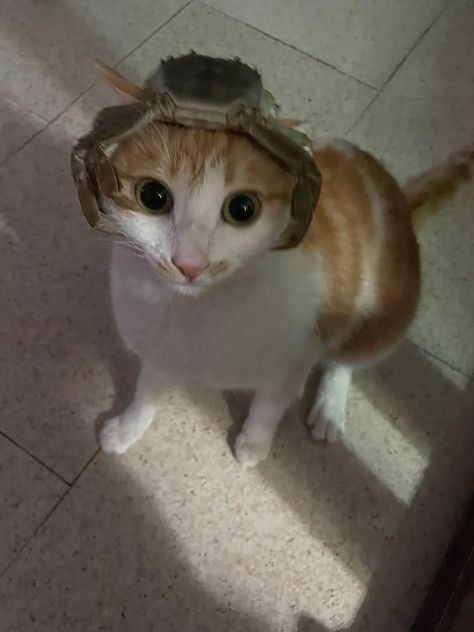
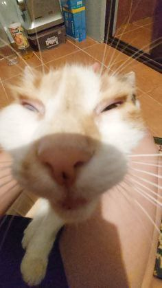
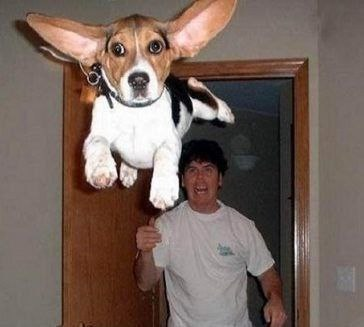

Практична робота №7
Це текст, який обтікає зображення ліворуч. Текст може бути будь-якого розміру, і його довжина залежить від потреб. Зображення знаходиться з лівого боку, а текст плавно заповнює простір справа.
Це текст, який обтікає зображення праворуч. Використання властивості float: right дозволяє розташувати зображення праворуч, а текст заповнює ліву частину сторінки. Це корисно для створення статей або презентацій.
- 
- 
- 